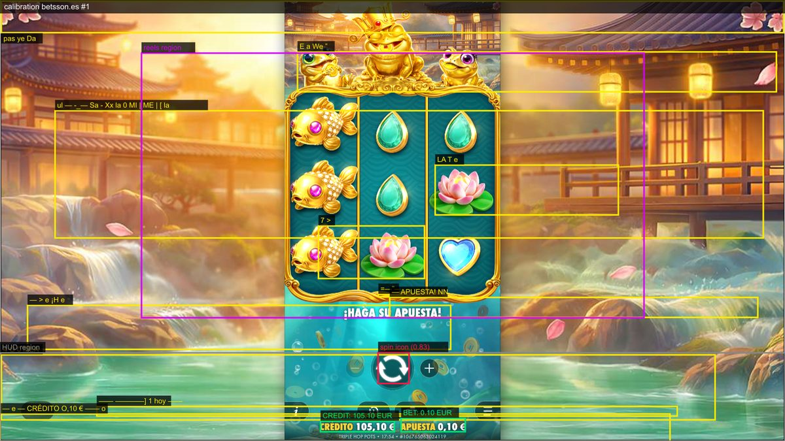

Intelligent Game Validation — informes
Pragmatic Play en betsson.es, Real Play, validado como un jugador: solo píxeles (OCR y visión), nunca el DOM del juego. Ejecuciones reales del 15/10/2026, con imágenes, logs y cifras.
01 · Escenario 1: tirada completada en Real Play✅ todas las comprobaciones superadas02 · Escenario 2: cuenta sin saldo (la tirada queda bloqueada)✅ todas las comprobaciones superadas03 · Series de tiradas: el saldo tirada a tirada04 · Subir la apuesta con «+» y tirar con ella✅ 57 comprobaciones superadas, 0 fallos05 · Cómo se ve un fallo: demo de informe con un error provocado✗ 2 fallos, provocados a propósito06 · Visión y OCR: qué técnica usamos para cada cosa y por qué07 · Problemas reales que encontramos en vivo y cómo los resolvimos08 · Calidad, tests y arquitectura

Intelligent Game Validation · Betsson × Malackathon 2026 · generado desde docs/reports/*.md (npm run reports:html)